Меньше отвлечений
Уведомления Codex, Claude и Slack с защитой от повторов. В играх и других полноэкранных приложениях островок скрывается.
Миниатюрная полоска сверху экрана. Зелёная — задача в процессе. Потяните вниз, чтобы увидеть детали, или раскройте островок полностью.
Переносимое приложение · Windows 10 / 11 · Beta
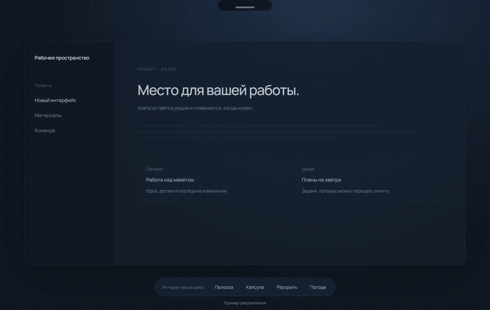
Уведомления Codex, Claude и Slack с защитой от повторов. В играх и других полноэкранных приложениях островок скрывается.
Задачи со ссылками и дедлайнами, таймер фокуса, события календаря, прогноз на 7 дней и отчёт дня в выбранной папке. Русский и английский языки; задачи можно отключить.
MCP позволяет агентам передавать план дня, результаты работы и запросы уточнений. Инструкции подключения находятся в README.
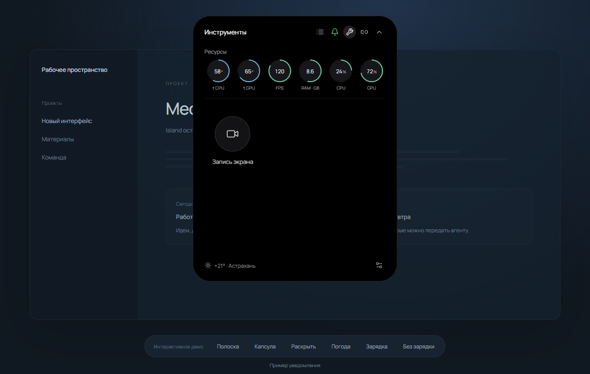
Запись экрана или области, с микрофоном и звуком компьютера.
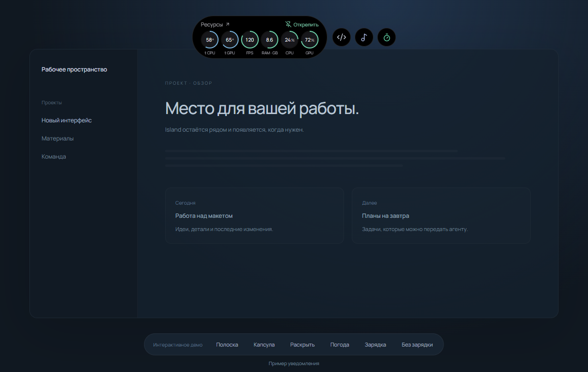
Ресурсы рядом с игрой. Закрепите капсулу одним нажатием.
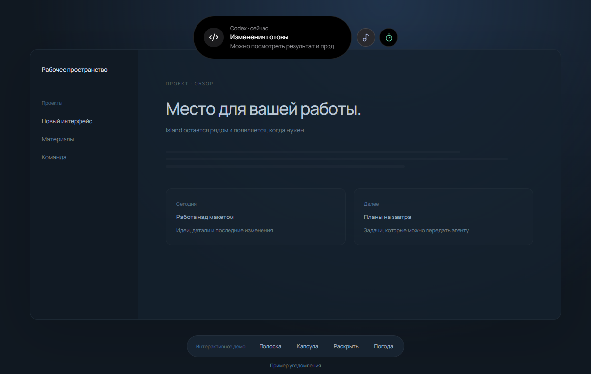
Уведомление, музыка и задача: переключение одним нажатием.
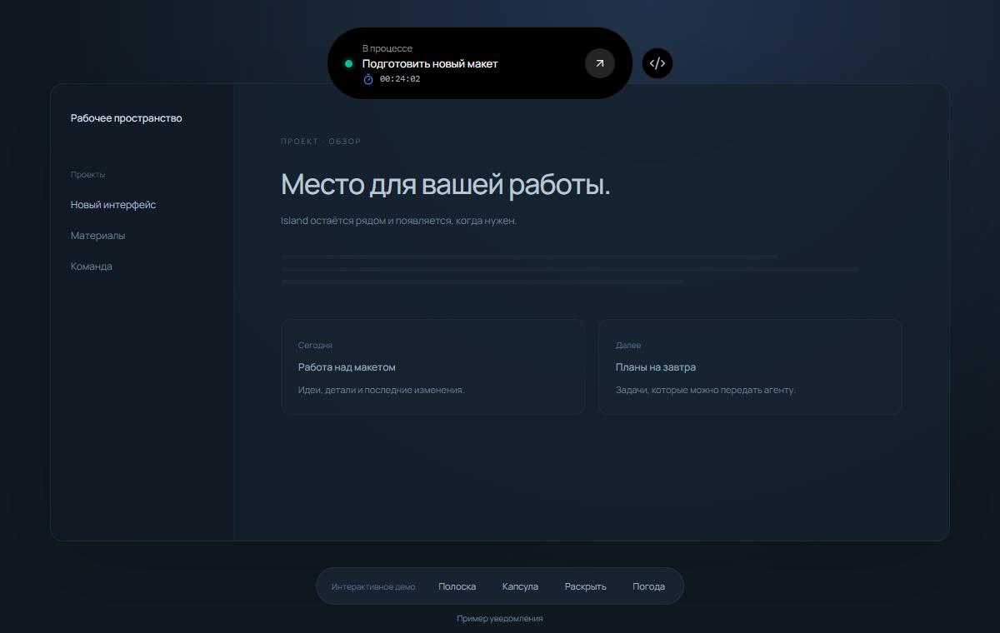
Капсула: детали только тогда, когда они нужны.
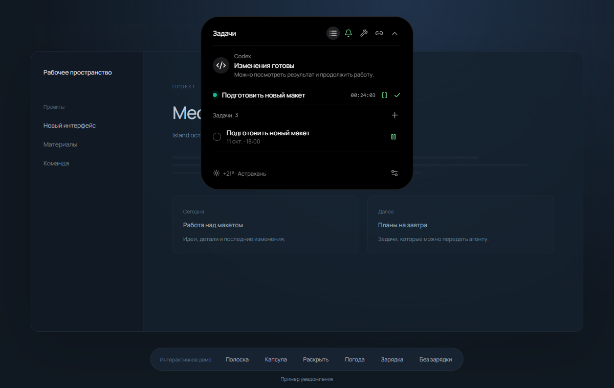
Полный список задач и действий.
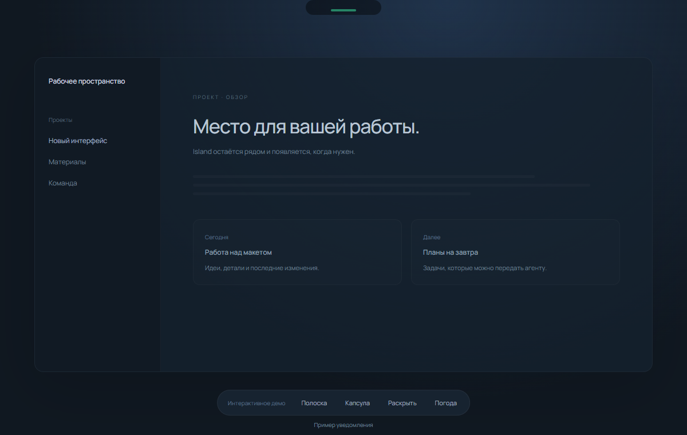
Активная задача: только зелёная полоска.
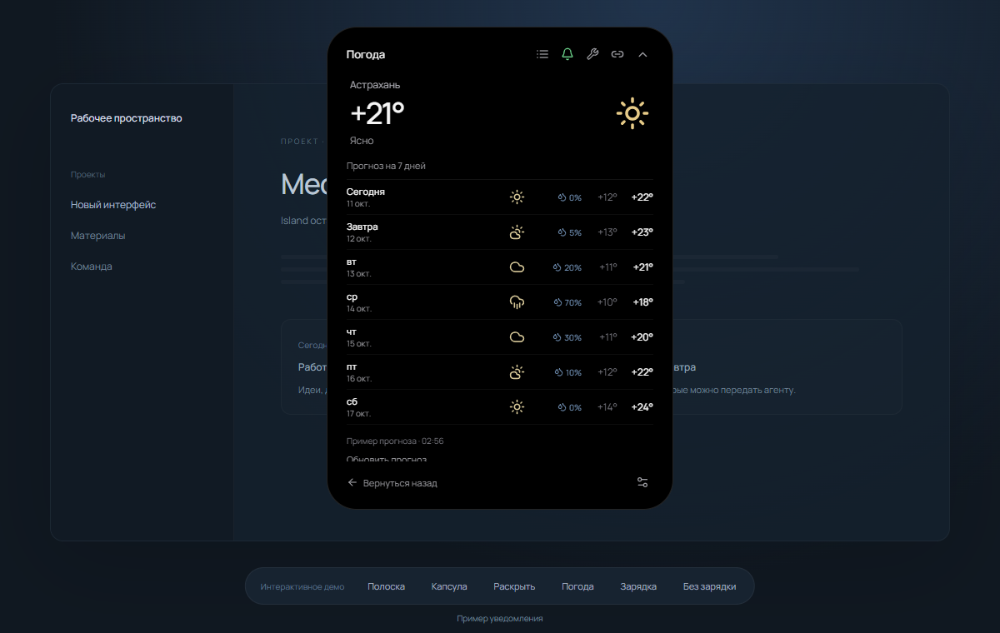
Семь дней погоды в той же капсуле.
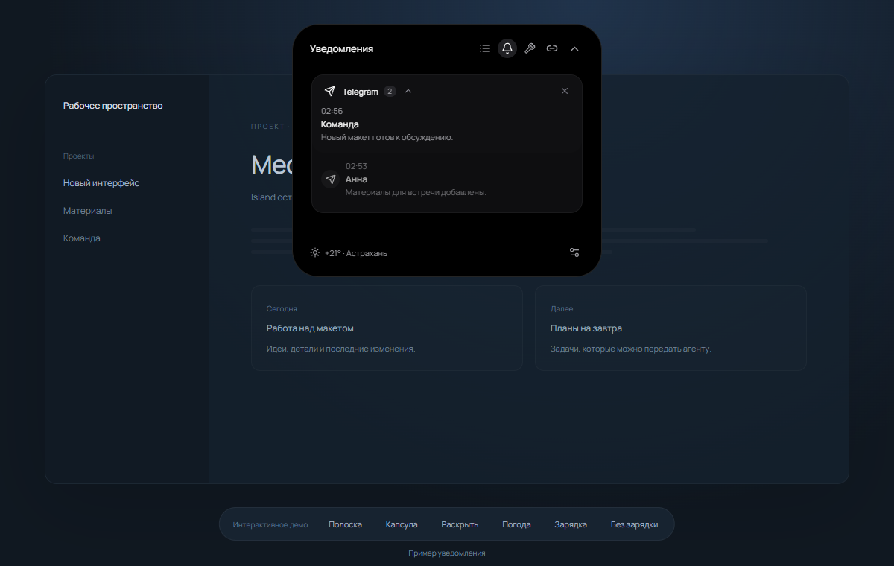
Сообщения приложений собраны в стопки.
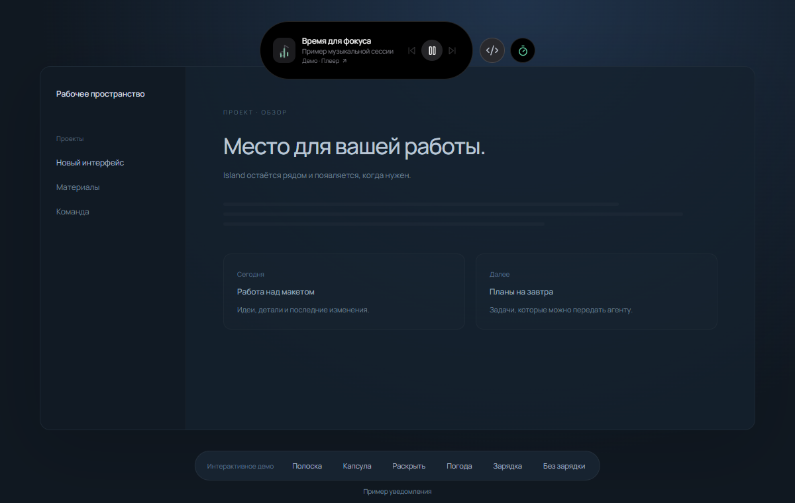
Музыка: управление и переход к плееру.
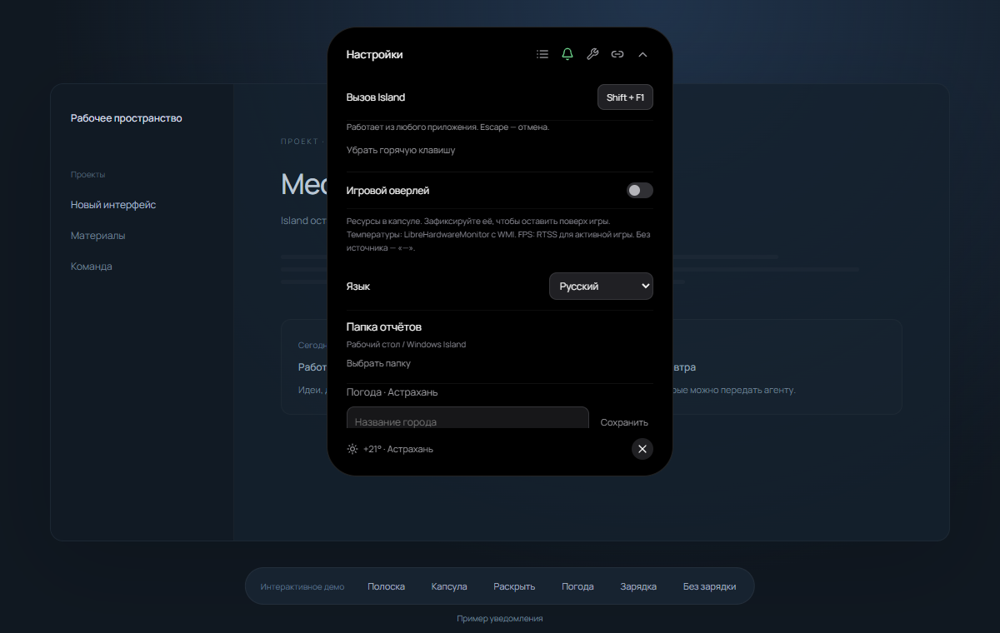
Выберите язык, папку отчётов и нужные функции.
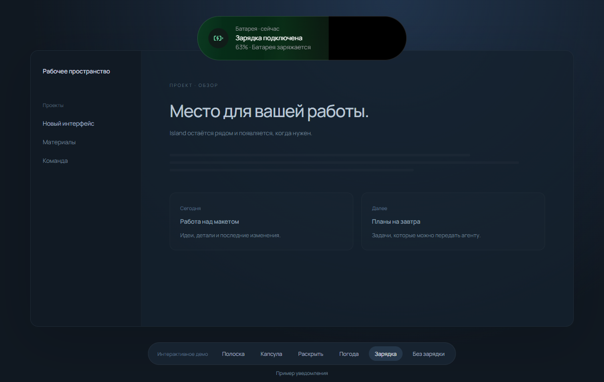
Зарядка: лёгкое заполнение до текущего процента батареи.